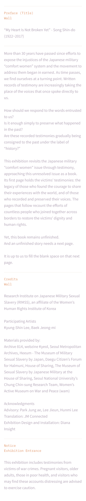
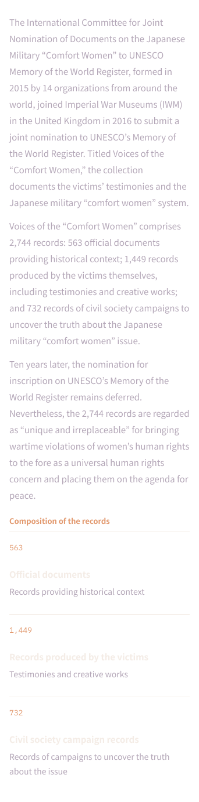
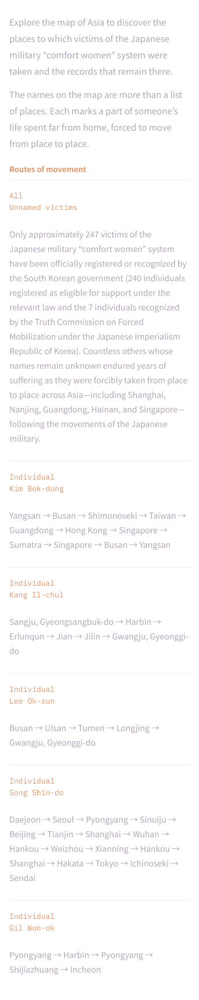
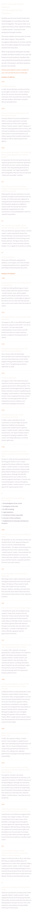
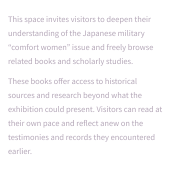

Special exhibition hosted by the Research Institute on Japanese Military Sexual Slavery (RIMSS), Women’s Human Rights Institute of Korea
Testimony— The Next Page
The 2,745th Record
How should we respond to the words entrusted to us? The journey begins to write the 2,745th record — the next page to the 2,744 records that came before.
2026
2026
This exhibition includes testimonies from victims of war crimes. Pregnant visitors, older adults, those in poor health, and visitors who may find these accounts distressing are advised to exercise caution.
“My Heart Is Not Broken Yet”
— Song Shin-do (1922–2017)
This exhibition revisits the Japanese military “comfort women” issue through testimony, approaching this unresolved issue as a book. Yet, this book remains unfinished. And an unfinished story needs a next page. It is up to us to fill the blank space on that next page.
Exhibition Sections
01 Information DeskEntrance texts: preface, credits and visitor notices.

02 Preface: A Timeline of the MovementFrom 1975 to 2026: the history of the movement led by witnesses and researchers.
03 Part 1. Contemporary History: 2,744 RecordsThe 2,744 records nominated for UNESCO’s Memory of the World Register.

04 Part 2. Voices of TestimonyFace five witnesses: Kim Bok-dong, Kang Il-chul, Lee Ok-sun, Song Shin-do and Gil Won-ok.
05 Paths of MemoryFollow the map of Asia to find where victims were taken, and the records left behind.

06 Testimonies Through LivesWorks and records left by witnesses and later-generation artists.

07 Transition PassageA space where the voices of witnesses from around the world meet.
08 Part 3. The Messages Left by NumbersHistory seen anew through numbers, and the records visitors leave.

09 The Forest of ArchivesA space to freely browse related books and studies.

Research Institute on Japanese Military Sexual Slavery (RIMSS), Women’s Human Rights Institute of Korea
The exhibition, rebuilt online
The 2,745th Record
A 3D virtual exhibition that lets you walk through all nine spaces in 360°. Choose a room below, or press Enter to follow the full visitor route.